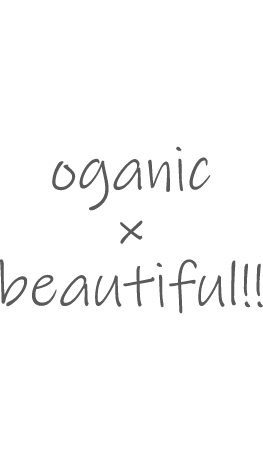

ローディング後、この画面が見えます。

我慢しなくても良い
キレイに近づけるお菓子
健康や美容への意識が高まるなか、
なるべくヘルシーなおやつを選んだり、
おやつを我慢する人が増えています。
私たちは、どなたでもおやつ時間を
罪悪感なく楽しく過ごしていただけるよう、
植物由来のシンプルな素材のみを入荷し、
ひとつひとつ丁寧に作っています。
使用している素材は、
スーパーフードとして注目されているオートミールや
チアシードのほか、おからやドライフルーツなどを使った、
食物繊維・ビタミン・ミネラルたっぷりの食材のみ。
おいしさとキレイを両立させる、
安心で嬉しいおやつが「Oganicake」です。
Cookie.Pound Cake.Fruits.Tart.Muffin.Cookie.Pound Cake.Fruits.Tart.Muffin.
植物由来の素材で
からだの中からキレイに
お菓子の材料によく使われる卵やバター、小麦粉、白砂糖は使用せず、オートミール、おからパウダー、チアシード、アマニ、ドライフルーツ、米油など、原材料は全て植物由来の素材を使用しています。 また、人工甘味料や保存料も使用せず、からだにやさしいクッキーに仕上げました。
3枚で1/2日分の食物繊維
糖質も約51%OFF
低糖質で食物繊維がたっぷりのお菓子。 自然由来の素材なので、妊婦さんも召し上がっていただけます。 Oganicakeのクッキーは、たった3枚(45g)で、1日に必要な食物繊維の1/2が摂れます。これは、バナナ約9~10本相当分です。 栄養不足も補える嬉しいお菓子です。
おいしさとキレイの
両立を目指して
「おやつを我慢したくない」をきっかけにスタートし、
素材選びから美味しいまで研究を続けてようやく完成したのが、
Oganicake（オガケーキ）。
美味しさと栄養、どちらもこだわっています。
Cookie.Pound Cake.Fruits.Tart.Muffin.Cookie.Pound Cake.Fruits.Tart.Muffin.
Oganicake焼き菓子専門店
2022年6月15日よりグランドオープン
営業時間
月~金（祝日除く） 10:00~17:00
店舗所在地
東京都板橋区8丁目18-33